{kind=link}
# Data loading and manipulation packages
import pandas as pd
import numpy as np
import gzip
# Dimension reduction packages
from sklearn.decomposition import PCA
from sklearn.manifold import TSNE
from sklearn.feature_extraction.text import CountVectorizer, TfidfVectorizer
# Clustering packages
from sklearn.cluster import KMeans, DBSCAN, AgglomerativeClustering
from sklearn.metrics import silhouette_score
# Data visualization packages
import matplotlib.pyplot as plt
import seaborn as sns
import plotly.express as px
import plotly.figure_factory as ff
# Ignoring warnings
import warnings
warnings.filterwarnings('ignore')Unsupervised Learning
Overview
Dimension Reduction
PCA
In this section, I will use text frequency-inverse document TF-IDF as my embedding method to vectorize our reviews data. My rationale for using only TF-IDF, comes from the questionable results obtained when I used only the bag-of-words approach in the EDA section. Specifically, when looking only at single term frequency per review class, there were multiple instances where meaningless words appeared most frequently across all review scores. I was able to address this issue by instead bagging pairs of words (bigrams) instead, which yielded more intuitive results. Regardless, I chose to only use TF-IDF in this section because it considers both how often a term appears in a single review (Term Frequency), and how rare the term is across all reviews (Inverse Document Frequency). This two-pronged approach punishes words that are common across the entire review corpus, while favoring those that are less common and therefore may have greater meaning. For further context on TF-IDF, see the equations outlined in the literature review on the Home page.
After embedding the review text, I will leverage several different unsupervised learning techniques. To begin, I use two types of dimension reduction techniques to collapse the high-dimensional tf-idf matrix into a low-dimensional space for easier visualization. For this, I will use Principal Components Analysis (PCA) and t-distributed Stochastic Neighbor Embedding. In case you are unfamiliar with these two topics - PCA works by identifying an axes in high-dimensional space, along which the preserved variance of the data is maximized. These so-called “principal” components are eigenvectors of the covariance matrix, and their selection (i.e. how many principal components we take) depends on the respective share of total variance preserved by their eigenvalues1.
Here is a helpful visualization of what is going on in PCA:

Source: Builtin
t-SNE
On the other hand, t-SNE takes a non-linear, probabilistic approach to dimension reduction that works in two stages. First t-SNE constructs probability distributions over different pairs of high-dimensional points, where it then assigns higher probabilities to similar points and lower probabilities to dissimilar points2. From there, t-SNE creates similar probability distributions in lower dimensional space, and shrinks the difference between the two distributions by minimizing the Kullback-Leibler (KL) divergence between the two. In simple terms, the KL divergence simply measures the difference between two different probability distributions3. T-SNE also requires the use of a perplexity hyperparameter, which represents a guess as to how many close neighbors a given point should have, or the “balance between preserving the global and local structure of the data”4. Feel free to head over here for a more robust explanation of t-SNE and KL divergence.
Example of how perplexity Influences t-SNE Results
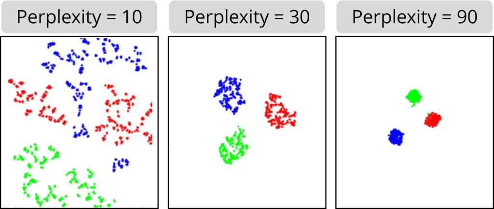
Source: Single Cell Discoveries
Clustering
Once the data is properly collapsed into a lower-dimensional space, I will apply several clustering methods in order to better understand how different pieces of text group together. For this, I will use K-Means Clustering, Hierarchical Clustering, and DBSCAN. The goal for using clustering methods within the context of this study is to uncover underlying patterns in text for different review rating scores.
K-Means
As a first step, I will apply a K-Means clustering algorithm to the dimension-reduced data. The K-Means algorithm starts by randomly selecting \(k\) points in the dataset, where \(k\) is a hyperparameter that we can optimize by using the elbow method (covered below). From there, the algorithm takes these \(k\) centroids and calculates their distance to all other points in the data set, assigning all of the closest points to their respective centroid. For my distance metric, I elect use Euclidean distance5:
\[ \text{for a point} \ x = (x_1, x_2, ..., x_n) \ \text{and centroid} \ \mu = (\mu_1, \mu_2, \mu_n) \ \text{their distance} \ d(x,\mu) = \sqrt{\sum_{i=1}^{n}(x_{i}-\mu_{i})^2} \]
After all data points have been assigned to their initial clusters, we calculate the mean of all data points for a given cluster6:
\[ \mu_{j}^{\text{new}} \leftarrow \frac{1}{|S_{j}|} \sum_{x_{i} \in{S_{j}}} x_{i} \]
From there, we repeat our distance calculation and cluster re-assignment until convergence.
Example of K-Means Convergence
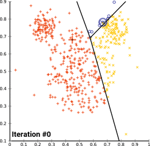
Source: Wikipedia
Hierarchical Clustering
In the next step of the process, I will use hierarchical clustering to help extract text groupings from the data. Unlike K-Means clustering’s reliance on centroids, hierarchical clustering uses a tree-based model of distance called a ‘dendrogram’ to analyze similarity of data points. The dendrogram is constructed through an iterative process, where it progressively combines or splits up clusters based on the similarity of points within them. The process ends either when all points in the data are combined into a single cluster, or when a predefined number of clusters are formed.
There are two different types of hierarchical clustering, agglomerative and divisive. Here, I elect to use agglomerative or “bottom-up” hierarchical clustering to group my data points. Take for example the case when our data set is the the set letters [A,B,C,D,E,F]. An agglomerative clustering model starts by treating each letter as its own cluster. In the next step, the model combines the most similar clusters. For instance, the model may merge together clusters B and C, and D and E, resulting in the new clusters [A, BC, DE, F]. From there, the model calculates cluster distances again, merging clusters DE and F, leaving us with [A, BC, DEF]. Eventually, the model will merge all clusters such that we have a single cluster [ABCDEF] (Thanks to geeksforgeeks for this example).
Simple Example of Agglomerative Clustering:
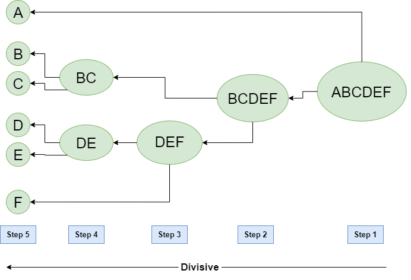
Source: GeeksforGeeks
DBCSCAN
Density-based spatial clustering of applications with noise, or DBSCAN is a density-based approach to clustering data points. I elect to use this method of clustering in my analysis because the two methods above (K-Means and Agglomerative) are geared towards finding spherical- or convex-shaped clusters (shapes that are better-defined and less noisy). In the case of low-dimensional representations of text data, it is highly likely that clusters will not be well-defined, and therefore may require an alternative method for extracting them. That is precisely where DBSCAN comes into play. The DBSCAN algorithm requires eps and MinPts parameters, where eps “defines the neighborhood around data points,” wherein the distance between two points that are close to each other (neighbors) approximately equal to eps7. The parameter MinPts simply defines the minimum number of data points within the eps radius, where larger data sets typically require a higher value of MinPts7.
Example of DBSCAN Clustering

Source: KDnuggets
Code
Loading in Data and Libraries
Here, I begin by loading in all of the necessary libraries for dimension reduction and clustering. I am using the sklearn package for KMeans, DBSCAN, and agglomerative clustering, the plotly python library for displaying interactive visualizations, and pandas for data manipulation. Below, I begin by unzipping the data file we worked with in the EDA section.
# Pathway to raw data
data_path = "../../data/processed-data/reviews_short.csv.gz"
# Unzip the CSV file
with gzip.open(data_path, 'rb') as f:
# Read the CSV file into a dataframe
reviews = pd.read_csv(f)
reviews.head(1)| reviewRating | vote | verified | reviewTime | reviewerID | productID | reviewerName | reviewText | summary | reviewTextClean | summaryClean | binary_target | |
|---|---|---|---|---|---|---|---|---|---|---|---|---|
| 0 | 5.0 | 2 | False | 2016-06-17 | A7HY1CEDK0204 | B00I9GYG8O | Jor El | If you're looking for Cinema 4K capabilities o... | Filmmakers will love this camera. | youre looking cinema k capabilities budget cam... | filmmakers love camera | positive |
Baseline Tests
In this section, I vectorize our cleaned text data using the TfidfVectorizer object found in the sklearn library. Like I said previously, I experienced some issues relating to poor performance when applying CountVectorizer to single terms. Therefore, in this section, I elect to run the TfidfVectorizer` on single words and bigrams, as its consideration of word weights allows it to punish terms that are commonly found across all classes (review scores in this case).
The plan going forward:
- Conduct some preliminary baseline tests using PCA and t-SNE, and see which performs better when given our reviews data
- Take the higher performer of the two, and build out a refined function that can be used to iteratively test different parameters
- Once I find a result that I like, save it to a new variable for modeling down the line
- Perform clustering on the two best sets of reduced data.
Basline: t-SNE vs PCA
To start off, let’s create two simple plots of the data, using each of our two different dimension reduction techniques and TF-IDF embedding. To speed up the process, I will add a N_SAMPLES constant to allow for faster execution
Sample TF-IDF Matrix
N_SAMPLES = 2500
sampled_reviews = reviews.sample(n=N_SAMPLES, random_state=5000)
## Using tf-idf embedding
tfidf = TfidfVectorizer(max_features = 500, ngram_range=(1,2)) # Default params for our case: maximum features = 500 and consider both unigrams and bigrams
X_tfidf = tfidf.fit_transform(sampled_reviews['reviewTextClean'])Standard PCA and t-SNE Reduction
# Initializing PCA object
pca = PCA(n_components=2, random_state=5000) #Default params for our case: 2 principal components
# Fitting to our embedded text
pca_data = pca.fit_transform(X_tfidf.toarray())
# Initializing t-SNE object
tsne = TSNE(n_components=2, perplexity=30, random_state=5000) # Default params for our case: 2 components, perplexity = 30, n_iter = 1000
# Fitting to our embedded text
tsne_data = tsne.fit_transform(X_tfidf.toarray())Plotting Results
# Plotting PCA results
plt.figure(figsize=(12, 6))
plt.scatter(pca_data[:, 0], pca_data[:, 1])
plt.title("PCA on TF-IDF (Unigrams and Bigrams, n = 2500)")
plt.xlabel("PC1")
plt.ylabel("PC2")
plt.show()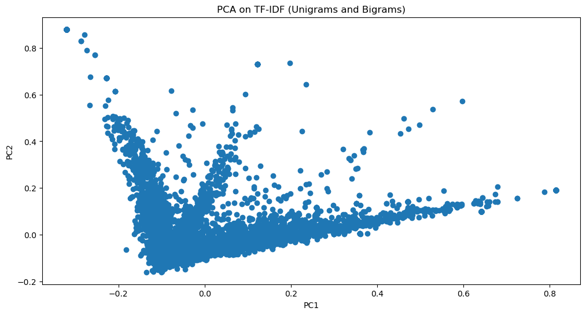
The above PCA plot demonstrates a very strong linear structure, where most of the data poinrs are concentrated along a single dominant direction. The most likely reason for this is that our princple components analysis was heavily influenced by a small group of dominant features. When thinking about this within the context of our reviews data, it makes sense that there are especially strong features, as reviews are often repetitive and contain a lot of the same content, especially adjectives and in this case names of standard electronics (i.e. batteries, keyboards, storage, etc.)
# Plotting t-SNE results
plt.figure(figsize=(12, 6))
plt.scatter(tsne_data[:, 0], tsne_data[:, 1])
plt.title("t-SNE on TF-IDF (Unigrams and Bigrams, n = 2500)")
plt.xlabel("Dim 1")
plt.ylabel("Dim 2")
plt.show()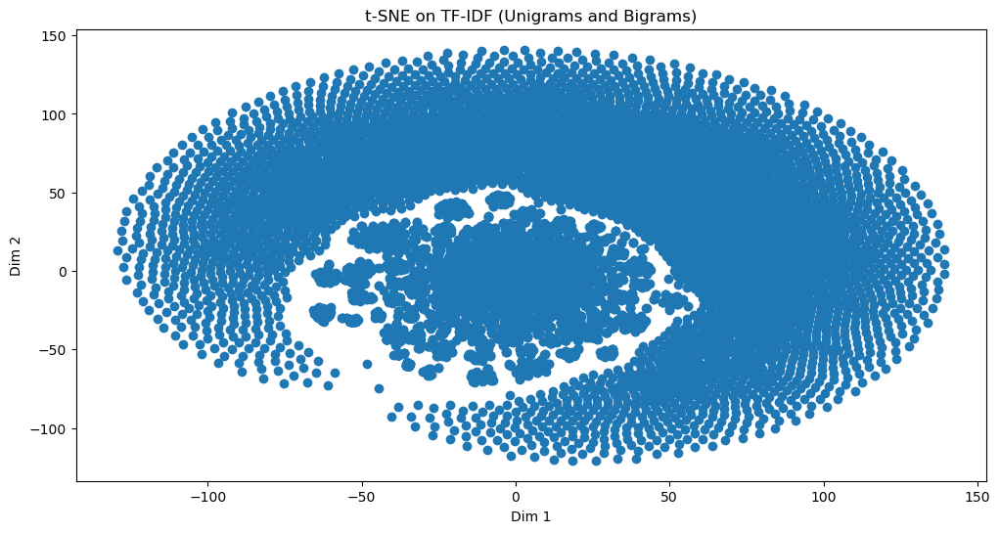
In contrast to our PCA plot, the t-SNE plot above shows a bit more promise. Ignoring the massive circle of points on the outer ring of the plot, we can see that t-SNE is able to better capture localized groups in the data, which makes it more ideal for clustering. Of course, we will have to tune some parameters to get a better result, but this is a strong first step. Going into this first stage, I had a feeling that t-SNE would outperform PCA when collapsing our TF-IDF embeddings.
Moving forward, I will shift my focus toward refining our t-SNE reduction process. Below, I outline a function that I will use to help speed up the process.
Parameter Optimization: Dimension Reduction
Below, I define the following functions:
plot_embeddings(): A helper function that creates scatterplot of data across dimensions returned by t-SNEreduce_and_visualize(): Our main function that handles parameter adjustment for both t-SNE reduction and TF-IDF embedding. Controls sample size as well for quick iteration
Note: For the plot_embeddings() function, I consulted an LLM to help write the code that produced the parameters table. At the bottom of this page, I provide the original function used to display the plots, as well as a citation that includes my prompt8.
def plot_embeddings(data, title, labels=None, params=None):
"""
This function:
1) Creates a scatterplot of t-SNE reduced, TF-IDF embedded text data
'data': Our t-SNE output
'title': name for our plot
'labels': the condition we use to color our points (column in the data set)
'params': is a dictionary that we define in redude_and_visualize() containing all of the parameters that we used
in this function, it is used to plot them in a table next to our visualization.
"""
# Initializing figure
# plt.figure(figsize=(10,6))
fig, ax = plt.subplots(1, 2, figsize=(16,6), gridspec_kw={"width_ratios": [3, 1]})
scatter = ax[0].scatter(data[:, 0], data[:, 1], # First and second axes produced by t-SNE
c = labels, # Fill condition (if any)
cmap = "viridis", # color scale
s = 10, # Size of points
alpha = 0.8) # Opacity of points
ax[0].set_title(title)
ax[0].set_xlabel("Dimension 1")
ax[0].set_ylabel("Dimension 2")
fig.colorbar(scatter, ax=ax[0], label = "Rating")
# Handling params table
if params:
param_table = pd.DataFrame(list(params.items()), columns=["PARAMETER", "VALUE"])
ax[1].axis("off")
table = ax[1].table(cellText=param_table.values, colLabels=param_table.columns, loc="center")
table.auto_set_font_size(False)
table.set_fontsize(10)
table.auto_set_column_width(col=list(range(len(param_table.columns))))
plt.tight_layout()
plt.show()Now, for our main function reduce_and_visualize(), I use the following parameters
- reviews: our pandas dataframe containing the target ‘reviewTextClean’ column
- sample_size: the number of samples we want to take from the dataframe
- random_state: our seed for random processes (sampling and t-SNE)
- perplexity: the perplexity value for our t-SNE process (Outlined above)
- n_iter: Number of iterations for t-SNE
- max_features: maximum number of TF-IDF features
- ngram_range N-gram range for TF-IDF (i.e. (1,1) is unigrams only, (1,2) is both unigrams and bigrams, and (2,2) is only bigrams)
- min_df: Minimum document frequency for TF-IDF
- max_df: Maximum document frequency for TF-IDF
- intermediate_pca: A boolean that states whether or not we use PCA before running t-SNE
- return_df: A boolean that states whether or not we return our collapsed dataframe (Will use this later If we want to keep the results)
- show_plot: A boolean that states whether we show the resulting plot or not.
The scikit-learn documentation on t-SNE highly recommends that we use another form of dimension reduction before running t-SNE to speed up the process of computation. Therefore, in this function I include the intermediate_pca parameter, which allows me to decide whether or not I run principal components analysis on the data before feeding it into t-SNE. The documentation advices that this process should reduce our data to a ‘reasonable’ amount of dimensions9. In this function, I elect to go for 50 principal components. However, in future iterations I intend to optimize this parameter as well. For now, I will keep it static.
def reduce_and_visualize(
reviews,
sample_size=2500,
random_state=5000,
perplexity=30,
n_iter=1000,
max_features=500,
ngram_range=(1,2),
min_df=1,
max_df=1.0,
intermediate_pca=True,
return_df = False,
show_plot = True
):
"""
This function:
1) applies TF-IDF embedding to our text data
2) (if intermediate_pca = True) runs intermediate PCA with n_components set to 50
3) Takes either raw data or PCA-reduced data and feeds it into t-SNE with set params
"""
# Our first step is to break off our predefined sample data (defined in sample_size)
if sample_size < len(reviews):
sampled_reviews = reviews.sample(n=sample_size, random_state=random_state).reset_index(drop=True)
else:
sampled_reviews = reviews.reset_index(drop=True)
# Next we need to extract the relevant columns
review_texts = sampled_reviews['reviewTextClean']
review_ratings = sampled_reviews['reviewRating']
# Now we can initialize our TF-IDF object and fit it to our cleaned review text
tfidf = TfidfVectorizer(
max_features=max_features,
ngram_range=ngram_range,
min_df=min_df,
max_df=max_df,
)
X_tfidf = tfidf.fit_transform(review_texts)
# Here, we are extracing the most important terms for each observation
feature_names = np.array(tfidf.get_feature_names_out())
most_important_terms = feature_names[np.argmax(X_tfidf.toarray(), axis=1)]
# Now, we handle intermediate PCA conditions, converting our sparse matrix into a dense numpy array in both cases using .toarray()
if intermediate_pca:
print("Applying intermediate PCA...")
# Initialize PCA object
pca = PCA(n_components=50, random_state=random_state)
# Applying to X_tfidf
X_reduced = pca.fit_transform(X_tfidf.toarray())
else:
X_reduced = X_tfidf.toarray()
# Once that is handled, we can feed our dense array into t-SNE
print("Applying t-SNE...")
tsne = TSNE(n_components=2, perplexity=perplexity, random_state=random_state, n_iter=n_iter) # Here we collapse to 2-Dimensions, but in some cases we may need 3
reduced_data = tsne.fit_transform(X_reduced)
# Creating a dataframe for later clustering
reduced_df = pd.DataFrame(reduced_data, columns=["Dim1", "Dim2"])
reduced_df["Rating"] = review_ratings.values
reduced_df["Most_Important_Term"] = most_important_terms
# Gathering our parameters for the plot
params = {
"Sample Size": sample_size,
"Perplexity": perplexity,
"Iterations": n_iter,
"Max Features": max_features,
"N-gram Range": ngram_range,
"Min DF": min_df,
"Max DF": max_df,
"Intermediate PCA": intermediate_pca
}
if show_plot:
# After all of that, we can now plot our results...
print("Plotting results...")
plot_embeddings(
reduced_data,
title = f"t-SNE With TF-IDF Embeddings",
labels = review_ratings,
params = params
)
# Return reduced dataframe
if return_df:
return reduced_dfTest 1: Intermediate PCA
Let’s test out this function with all of the same paremeters as our base case while also including intermediate PCA
# Testing out this code
reduce_and_visualize(reviews)Applying intermediate PCA...
Applying t-SNE...
Plotting results...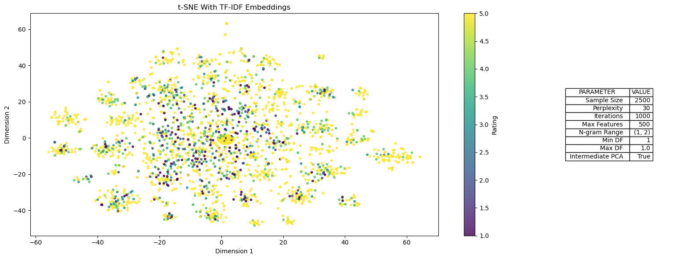
This plot above shows results of our algorithm, when using all of the same parameters as our default case above, with the only difference being the inclusion of intermediate PCA. At a glance, this result seems to drastically improve our standard t-SNE process by a long-shot. The data points are much more spread out, and there are nice clusters beginning to form. The first method was able to extract some local structure, but it also yielded a massive spiral of points around said structure.
Taking this back to the context of our data, we unfortunately see litle to no relationship between cluster groupings and ratings score - meaning that the rating associated with a given review may not be related to the location of the review’s most important word in a high dimensional space. Nonetheless, there are clusters in this data, and the sections below will help us identify what they represent.
Test 2: No Intermediate PCA
In this test, I will apply all of the same parameters without the use of intermediate PCA. The goal here is to confirm that intermediate PCA was indeed the step that led to better extraction of the local relationships in our text data.
reduce_and_visualize(reviews, intermediate_pca=False)Applying t-SNE...
Plotting results...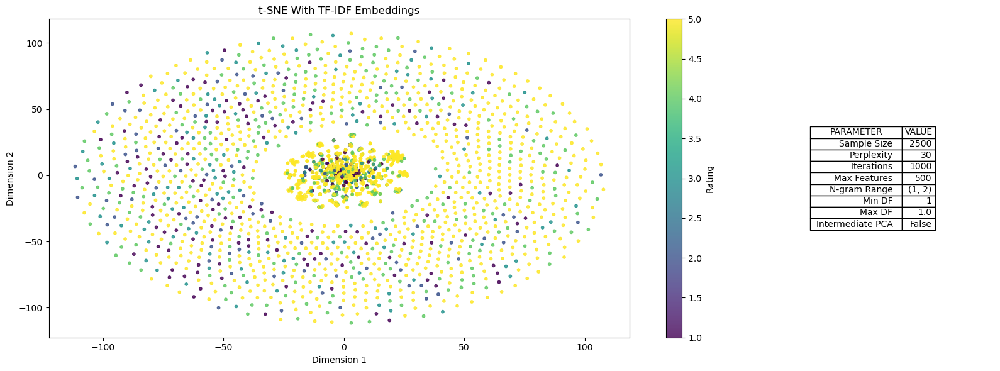
The plot above confirms that intermediate PCA is a critical step in producing useful results when reducing our data
Test 3: Adjusting Perplexity
In this section, I will apply low and high perplexity parameters to our algorithm, and check performance for both. As a refresher, perplexity controls the size of each data point’s neighborhood. For a more robust explanation, please refer to the openTSNE documentation.
Higher perplexity (100)
reduce_and_visualize(reviews, perplexity=100)Applying intermediate PCA...
Applying t-SNE...
Plotting results...Lower perplexity (10)
reduce_and_visualize(reviews, perplexity=10)Applying intermediate PCA...
Applying t-SNE...
Plotting results...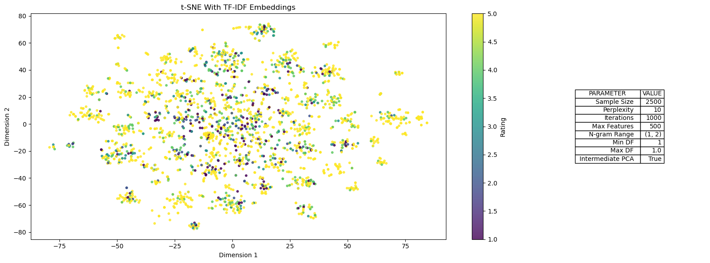
Interpretation
The first plot uses standard parameters, with a higher perplexity value of 100. In this plot, the distribution of points is more spread out, with larger clusters than our initial plot where perplexity was set to 30. Increased perplexity is synonymous with increased neighborhood size. Therefore, it makes sense to see more global groupings with fewer local clusters as a result. In the second plot, I lower perplexity from 30 to 10, which results in much tighter and local clusters. In the second case, we are lowering the size of a data point’s neighborhood, wich allows t-SNE to capture more localized groups. In the latter case, there is almost too much emphasis placed on local groups, which may yield more clusters when modeling than what would be appropriate. Therefore, from here I elect to use a value of perplexity that is high enough to maintain global relationships, while not being too high to ignore more nuanced local relationships
Test 4: Adjusting Document Frequency in TF-IDF Embedding
In this section, I will tweak the max_df parameter that applies to our initial TF-IDF embedding. The max_df parameter sets an upper bound on the document frequency calculated for certain terms (both unigrams and bigrams in our case). In other words, lowering the value for max_df will drop the threshold for which terms are dropped based on their document frequency. The rationale behind lowering this value is to ignore terms that are common in our data, which may help to create more well-defined clusters
Lower max_df (0.8)
reduce_and_visualize(reviews, perplexity=100, max_df=0.8)Applying intermediate PCA...
Applying t-SNE...
Plotting results...Not much of a change compared to plot above, let’s try an even lower value:
Lower max_df (0.6)
reduce_and_visualize(reviews, perplexity=100, max_df=0.6)Applying intermediate PCA...
Applying t-SNE...
Plotting results...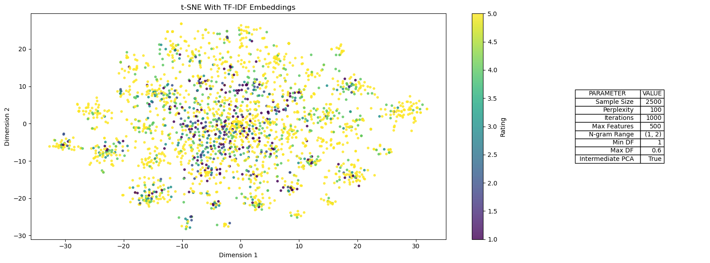
Not much of a change in either case. Let’s move on to tweaking our next parameter: max_features
Test 5: Tweaking Number of Iterations in t-SNE
The t-SNE parameter n_iter adjusts the number of iterations that the t-SNE algorithm runs through in order to optimize KL-Divergence9. In this test, I will raise the value of n_iter to increase the number of iterations t-SNE uses when trying to collapse dimensions
Increasing n_iter (2000)
reduce_and_visualize(reviews, perplexity=100, n_iter=2000)Applying intermediate PCA...
Applying t-SNE...
Plotting results...Again, we don’t see much change compared to plots with less iterations.
Fine-tuning Perplexity
After all of that, it seems that adjusting our perplexity parameter seems to impact our results the most. Thus, in this section I will test different perplexity values that are all greater than 30 - saving the dataset that yields the most promising results.
Testing Different Perplexity Values
# Set values to test
perplexities = [x for x in range(40, 140, 20)]
# [40, 60, 80, 100, 120]
# Looping through values
## for value in perplexities:
## print(f"PERPLEXITY VALUE: {value}")
## reduce_and_visualize(reviews, perplexity=value)For the sake of saving space, I omit the resulting plots from this process. In short, this loop yielded more dispersion between points as our perplexity parameter increased. When looking at the results for each, the plot corresponding to a perplexity of 100 provided the best balance between global and local groups.
Having said all of that, the dataset that I will use for clustering comes from the following configuration from the reduce_and_visualize function:
- Perplexity: 100
- Iterations: 1000
- Max Features: 500
- N-gram Range: (1,2) (Unigrams and Bigrams)
- Minimum Document Freq: 1
- Maximum Document Freq: 1.0
- Intermediate PCA: True (n_components = 50)
For the sake of clustering speed, I will use a sample of 10,000 rows taken from reviews.
# Gathering our dataset
reduced_df = reduce_and_visualize(reviews, sample_size=10000, perplexity=100, show_plot=False, return_df=True)
# Printing first rows
reduced_df.head(1)Applying intermediate PCA...
Applying t-SNE...| Dim1 | Dim2 | Rating | Most_Important_Term | |
|---|---|---|---|---|
| 0 | -15.568591 | 25.8913 | 1.0 | charger |
Clustering
KMeans Clustering
Elbow Method (inertia) and Silhouette Score
In case you are unfamiliar, “inertia” measures the squared cumulative distance of each data point to its respective cluster. For example, a lower value for inertia represents tighter clusters (or lower intracluster distances)10. When selecting an optimal number of clusters based on inertia, it is important to select the lowest number of clusters for which inertia is most drastically reduced. The reason being that inertia will continue to decrease as we add more clusters. This is precisely why we refer to this process as the “Elbow Method,” as we are selecting a number of clusters \(k\) where the marginal reduction of inertia by adding another cluster begins to tend towards zero.
\[ \text{Inertia} \ = \sum_{i=1}^{k} \sum_{i \in C_{i}} ||x - \mu_{i}||^2 \]
Source: Medium
On the other hand, the silhouette score measures how similar a data point is to its own cluster in comparison to other clusters. The value of this metric falls in the range [-1, 1], where high values represent well-matched data points and low-values represent poorly-matched ones10.
- Where \(a\) is the mean distance between a sample and all other points in the same cluster
- and \(b\) is the mean distance between a sample and all other points in the nearest cluster
\[ \text{Silhouette} \ = \frac{b - a}{max(a,b)} \]
Source: Napsterinblue via Github
# Set a range of clusters to test
k_clusters = [x for x in range(2, 30)]
# Initialize inertia and silhouette score lists for tracking
inertia = []
silhouette_avg = []
# Loop over different cluster numbers
for k in k_clusters:
# Initialize KMeans object for each one
kmeans = KMeans(n_clusters=k, random_state=5000)
# Fitting to data
kmeans.fit(reduced_df[['Dim1', 'Dim2']])
# Appending inertia value to list
inertia.append(kmeans.inertia_)
# Computing silhouette score
silhouette_avg.append(silhouette_score(reduced_df[['Dim1', 'Dim2']], kmeans.labels_))
# Plotting elbow method
plt.figure(figsize=(10,6))
plt.plot(k_clusters, inertia, marker='o')
plt.title("Elbow Method for Optimal # of Clusters")
plt.xlabel("Number of Clusters (k)")
plt.ylabel("Inertia")
plt.grid(True)
plt.show()
# Plotting silhouette scores
plt.figure(figsize=(10, 6))
plt.plot(k_clusters, silhouette_avg, marker='o')
plt.title('Silhouette Score for Optimal # of Clusters')
plt.xlabel('Number of Clusters (k)')
plt.ylabel('Silhouette Score')
plt.grid(True)
plt.show()
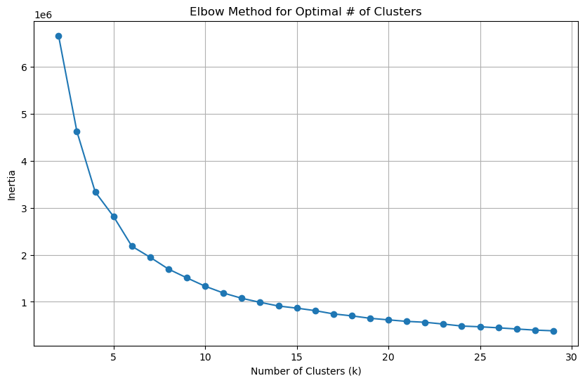
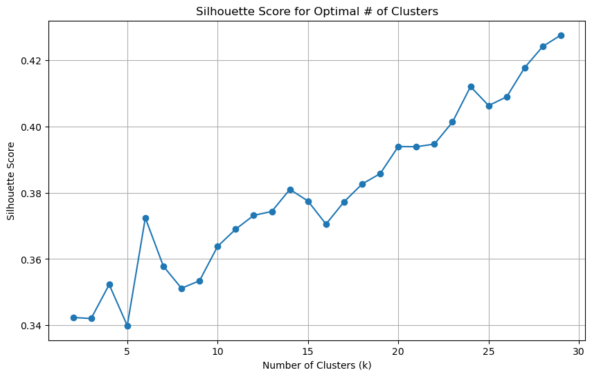
Elbow Plot (Inertia)
- The elbow plot above shows us that the optimal number or clusters is around 6, as a continued increase in the number of clusters beyond this point reduces inertia by a smaller amount each time.
Silhouette Score
- Unlike the elbow plot, our silhouette scores show that the optimal number of clusters in the data may be far larger (around 20-25 if we do not want to overallocate).
Combined Interpretation
- When taking both of these results into consideration, I will elect to choose a number of clusters that falls on the higher side. The reason being that our visualizations of the dataset in the sections above show that there are far more than 6 clusters present in our data. Therefore, I am going to run the algorithm with 10,15,20, and 25 clusters. In the end, I will plot the results and see which of these configurations performs the best.
# Running KMeans with optimal # of clusters
possible_ks = [10,15,20,25]
for k in possible_ks:
kmeans = KMeans(n_clusters=k, random_state=5000)
reduced_df[f"KMeans_{k}_Clusters"] = kmeans.fit_predict(reduced_df[['Dim1', 'Dim2']])
reduced_df.head()| Dim1 | Dim2 | Rating | Most_Important_Term | KMeans_10_Clusters | KMeans_15_Clusters | KMeans_20_Clusters | KMeans_25_Clusters | |
|---|---|---|---|---|---|---|---|---|
| 0 | -15.568591 | 25.891300 | 1.0 | charger | 2 | 13 | 18 | 24 |
| 1 | 49.179565 | -5.040786 | 5.0 | replacement | 0 | 12 | 12 | 16 |
| 2 | 35.679398 | -12.378240 | 5.0 | ive | 5 | 5 | 5 | 7 |
| 3 | 4.708546 | 39.718727 | 5.0 | little | 9 | 9 | 9 | 19 |
| 4 | -50.714245 | -1.021938 | 5.0 | fits | 8 | 8 | 16 | 12 |
Hierarchical (Agglomerative) Clustering
Silhouette Score
Similar to KMeans, we will optimize the number of clusters \(k\) in our hierarchical clustering model using the silhouette score.
# Initialize Silhouette Score list
silhouette_avg = []
# Loop over different clusters
for k in k_clusters:
# initializing agglomerative clutering object
agglo = AgglomerativeClustering(n_clusters=k)
# pulling cluster labels
cluster_labels = agglo.fit_predict(reduced_df[['Dim1', 'Dim2']])
# Append silhouette score to list
silhouette_avg.append(silhouette_score(reduced_df[['Dim1', 'Dim2']], cluster_labels))
# Plot silhouette scores
plt.figure(figsize=(10, 6))
plt.plot(k_clusters, silhouette_avg, marker='o')
plt.title('Silhouette Score for Optimal # of Clusters')
plt.xlabel('Number of Clusters (k)')
plt.ylabel('Silhouette Score')
plt.grid(True)
plt.show()
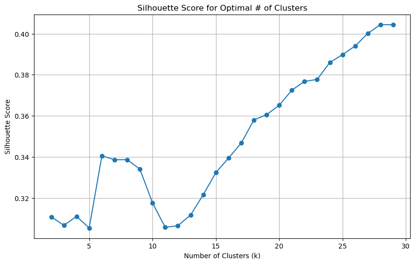
Looking at the above silhouette score plot for agglomerative clustering with different numbers of centroids, We see a point on the plot where the silhouette score begins to decrease around 22 clusters before increasing again. Taking this into account, I am only going to run one version of the hierarchical clustering model, where I set \(k\) equal to 22:
optimal_k_agglo = 22
agglo = AgglomerativeClustering(n_clusters=optimal_k_agglo)
reduced_df['Agglo_22_Clusters'] = agglo.fit_predict(reduced_df[['Dim1', 'Dim2']])DBSCAN
DBCAN requires the parameters eps - or the maximum distance between two samples for them to be considered in the same neighborhood, and min_samples - or the number of samples in a neighborhood for a point to be considered the “core” point7. Below, I will optimize each of these parameters using a set of potential
Optimizing DBSCAN Hyperparams
# Initializing list of potential eps and min_sample values
eps_values = [0.1,0.15,0.2,0.25,0.3,0.35,0.4,0.45,0.5,0.6,0.7,0.8]
min_sample_values = [3,4,5,6,7]
# Initialize starting value for best silhouette score, eps, and min_sample values
best_silhouette = -1
best_eps = 0
best_min_sample = 0
# Loop over different eps and min_sample values
for eps in eps_values:
for min_sample in min_sample_values:
# Initialize DBSCAN object
db = DBSCAN(eps=eps, min_samples=min_sample)
# Fit DBSCAN to the data and predict cluster labels (-1 indicates noise)
cluster_labels = db.fit_predict(reduced_df[['Dim1', 'Dim2']])
# Check if DBSCAN formed more than one cluster (ignore cases with only noise or one cluster)
if len(set(cluster_labels)) > 1:
# Calculate silhouette score
silhouette_avg_db = silhouette_score(reduced_df[['Dim1', 'Dim2']], cluster_labels)
# Update best params if the current silhouette score is higher than the best one so far
if silhouette_avg_db > best_silhouette:
best_silhouette = silhouette_avg_db
best_eps = eps
best_min_sample = min_sample
print(f"OPTIMAL DBSCAN PARAMS: eps={best_eps}, min_samples={best_min_sample}")OPTIMAL DBSCAN PARAMS: eps=0.6, min_samples=3After running a quick optimization on our parameters, we can see that the best values are 0.6 for eps and 3 for min_samples. Let’s now use these parameters to run DBSCAN cluster assignments that we can plot later on.
# Running DBSCAN with optimal Params
db = DBSCAN(eps=best_eps, min_samples=best_min_sample)
reduced_df['DBSCAN_Cluster'] = db.fit_predict(reduced_df[['Dim1', 'Dim2']])Plotting Clustering Results
Kmeans
The results for KMeans looks promising! Unfortunately, the web development software that I am working with won’t let me display interactive plots, so I took the liberty of posting some screenshots of my results below. In each of these screenshots, you can see where I highlight a certain point in different clusters. In the first case, the data point that I hover over has “camera” as its most important word. Interestingly, most of the other points in this cluster also contain other contextually-related words to “camera”, like “lenses”, “picture”, and “tripod”.
Similarly, in the second image, I hover over a point in a different cluster in which the most important term is “excellent”. Unlike the previous cluster, this one contains words that convey emotion and description, like “awesome” and “highly recommend”.
In the third image, I move to a different cluster and hover over a point where the most important term is “TV”. Like our first example, this cluster contains many terms related to “TV”, like “sony”, “antenna”, “cable”, and “mount”. Unfortunately, this process was not completely immune to error. There are several cases where clusters all contain a single word (e.g. every point in the top purple cluster has “good” as its most important term). In the future, I will try to correct these mistakes by using more sophisticated embedding techniques like BERT.
# Interactive plot for k_means
# KMeans Plotly Plot
fig_kmeans = px.scatter(reduced_df, x='Dim1', y='Dim2', color='KMeans_25_Clusters',
hover_data=['Rating', 'Most_Important_Term'], title="KMeans Clustering (k = 25)")
fig_kmeans.show()Fig 1: KMeans Clustering - The Camera Cluster
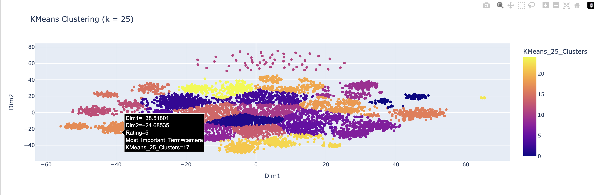
Fig 2: KMeans Clustering - The Emotions & Descriptor Cluster
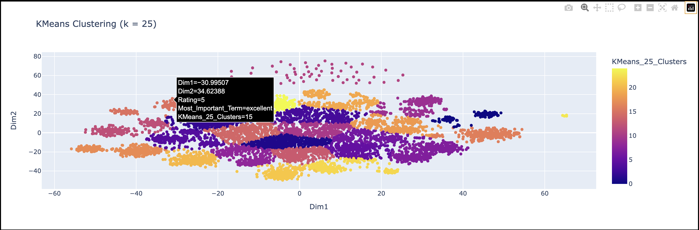
Fig 3: KMeans Clustering - The TV Cluster
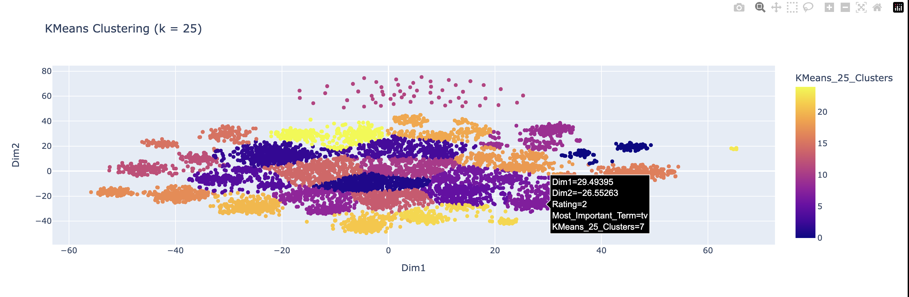
Hierarchical Clustering
Similar to KMeans, hierarchical clustering performed well when applied to our dimension-reduced data. In the first example below, you can see a point on the plot where its most important term is “speakers”. The other points in this cluster also share contextually-similar terms like “sound”, “wireless”, “ear”, “headphones”, and “music”.
In the second plot, we see a point in another cluster whose most important term is “harddrive”. Once again, we observe an interesting pattern within its neighboring points, whose most important terms include words like “data”, “gb”, “files”, and “ssd”.
Finally, similar to the KMeans results, we again observe flaws in the clustering results. In the third image, I provide a screenshot of what I call “the good cluster”, in which every data point’s most important term is “good”. This cluster was picked up by both the KMeans, and hierarchical models - which further reinforces the need to conduct more robust preprocessing in the future.
# Agglomerative Plotly Plot
fig_agglo = px.scatter(reduced_df, x='Dim1', y='Dim2', color='Agglo_22_Clusters',
hover_data=['Rating', 'Most_Important_Term'], title="Hierarchical Clustering (k = 22)")
fig_agglo.show()Fig 1: Hierarchical Clustering - The Music/Sound Device Cluster
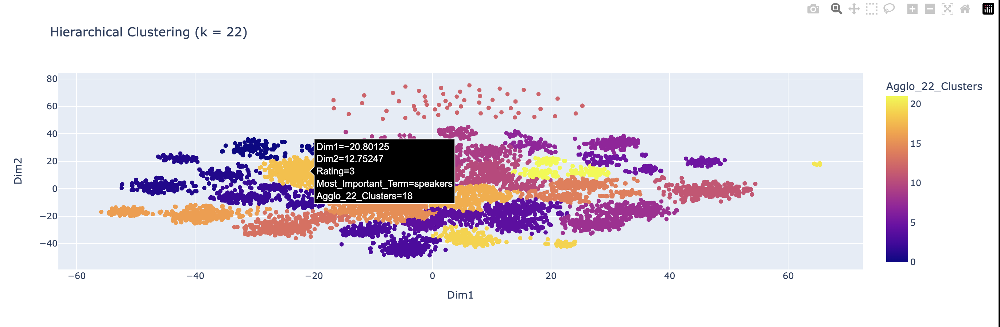
Fig 2: Hierarchical Clustering - The Data Storage Cluster
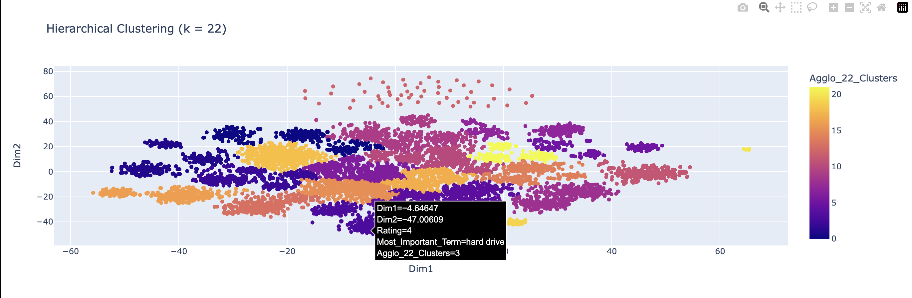
Fig 3 Hierarchical Clustering - “The Good Cluster”:
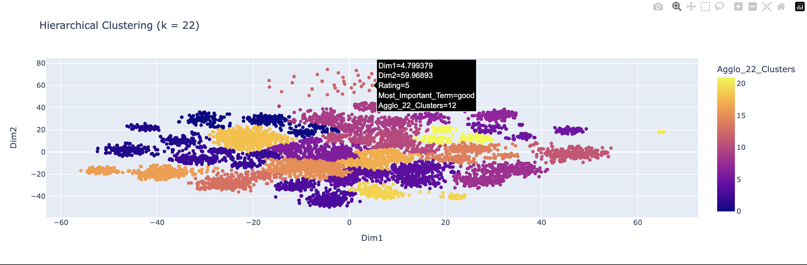
DBSCAN
In the beginning of this page, I predicted that DBSCAN would outperform the other two clustering methods. Unfortunately, the results I obtained using DBSCAN are rather underwhelming. There is pretty much zero separation between the over 600 clusters. The data points are scattered, with no clear structure or meaningful differentiation between the clusters. Upon further reflection, I believe the issue stems from not optimizing the eps and min_samples hyperparameters effectively. DBSCAN’s reliance on these parameters makes it sensitive to how they are set, and any miscalibration can result in an over-segmentation of the data or a failure to detect meaningful clusters. While this plot is pretty to look at, the clusters don’t provide any real context into the structure of the data points. In the future, I plan to revisit the parameter optimization above with hopes to improve this model’s performace, but for now, I leave you with this storm cloud of data.
# DBSCAN Plotly Plot
fig_dbscan = px.scatter(reduced_df, x='Dim1', y='Dim2', color='DBSCAN_Cluster',
hover_data=['Rating', 'Most_Important_Term'], title="DBSCAN Clustering")
fig_dbscan.show()Fig 1: DBSCAN Results
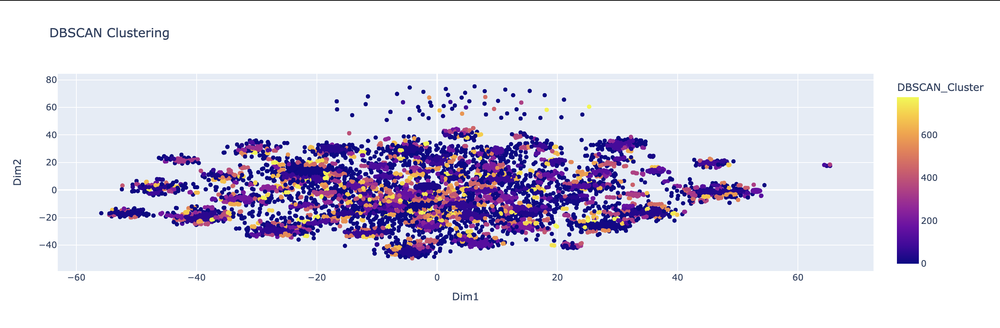
Summary
In this section, I start off by performing two different dimension reduction methods on my TF-IDF embedded review text data. In both cases (PCA and t-SNE) I used their default parameters. After running the two baseline reduction techniques, I plotted the results of each, and discovered that PCA’s linear reduction fell short in collapsing our text data into a meaningful representation. On the other hand, t-SNE showed promise with its ability to capture local groups in the data. However, the baseline function had to be refined in order to produce more meaningful results.
In the next section, refined the dimension reduction process by building a custom function that performec TF-IDF and t-SNE using custom preset parameters. From there, I tweaked a few different function parameters until I arrived at a configuration that I liked. After saving the best configuration’s result to the dataset reduced_df, I went ahead with clustering. For KMeans clustering, I optimized the n_clusters hyperparameter using the Elbow Method and Silhouette scores. For hierarchical clustering, I optimized using only silhouette scores. Finally, for DBSCAN, I optimized silhouette scores by using a grid search approach where I tried different combinations of the hyperparameters eps and min_samples, continuously updating their best values each time a higher silhouette score was found.
When looking at results from my clustering of Amazon Electronics reviews, I can say with relative confidence that the different regions/clusters in the text data do not have any real influence on review score. Instead, it’s more likely that each cluster relates to a different type of electronic good or subcategory like I mention above. Moving forward, I am not sure if these cluster assignments will be of any use when we try supervised learning.
Challenges
Plotting Parameters Table
As I outlined above, I had to leverage the help of OpenAI’s GPT-4o11 model to assist in writing code that produces a side table containing the parameters used in the reduce_and_visualize() function. Here is the original function that I pasted into that prompt:
def plot_embeddings(data, title, labels=None):
"""
This function creates a scatterplot of t-SNE reduced, TF-IDF embedded text data
'data': np.array object (2D). contains our t-SNE output
'title': the name for our plot
'labels': the condition we use to color our points (column in the data set)
"""
plt.figure(figsize=(12, 6))
scatter = plt.scatter(data[:, 0], data[:, 1], c=labels, cmap="viridis", s=10, alpha=0.7)
plt.colorbar(scatter, label="Rating")
plt.title(title)
plt.xlabel("Dim 1")
plt.ylabel("Dim 2")
plt.show()DBSCAN Problems
It is highly likely (even after processing) that my reviewTextClean column may typos, informal language, or otherwise irrelevant content that may impede model performance down the line.
Next Section: Supervised Learning
References
4.
8.
‘Prompt: How can i optimize the execution speed of this function [pasted]?‘ ChatGPT, version-4o, OpenAI, dec-7, 2024, chat.openai.com.
11.
“Prompt: Using a dictionary called ’params” that contains the parameters used in my function reduce_and_visualize(), can you add a table containing said params to this plotting function [pasted]?‘ ChatGPT, version-4o, OpenAI, dec-11, 2024, chat.openai.com.